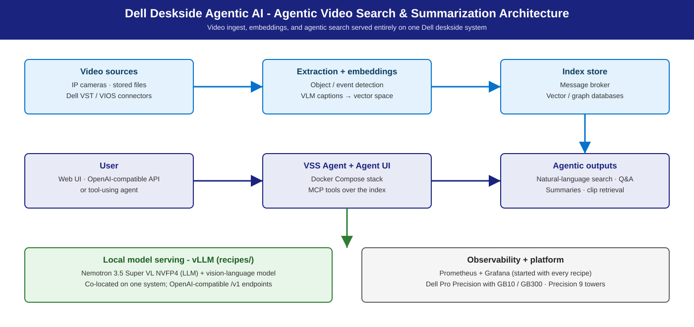

Agentic Video Search & Summarization
Turn raw video into searchable, summarized, queryable insight — locally.
Summary
Deploy NVIDIA's Video Search and Summarization (VSS) AI Blueprint on Dell deskside systems: a local vision-language model plus a locally-served LLM for natural-language search, timestamped summarization, and event detection over your own footage — no cloud dependency, no data-residency risk. Dell adds S/M/L sizing (GB10 · RTX PRO 6000 towers · GB300), a pinned LLM lineup on vLLM, recipes, and deployment guides.
Personas
| Persona | What this solution gives them |
|---|---|
| IT Admin | Per-host install, per-tier models, fleet automation, monitoring & storage — IT-Admin Guide. |
| Functional SME | "Which system for my team / camera count?" — S/M/L tables below. |
| AI Engineer | Nemotron default + tier-scaled alternates, VLM pairing, hybrid vLLM configs — Developer Deploy Guide. |
Reference NVIDIA playbooks
| Playbook | Platform | What Dell adds |
|---|---|---|
| VSS Blueprint (NVIDIA-AI-Blueprints) | RTX PRO / DGX-class GPU systems | S/M/L sizing, per-tier LLM lineup, hybrid vLLM config, fleet guide |
| RTX Local AI hub | RTX PRO discrete GPUs (Precision towers) | vLLM recipes + measured validation for the LLM half |
Use cases
| Use case | Who | What it looks like |
|---|---|---|
| Security & surveillance review | Physical security, loss prevention | "Show me anyone approaching the loading dock after 9 PM" → timestamped clips; footage never leaves the site. |
| Retail & manufacturing analytics | Retail ops, QA, plant managers | Continuous YOLO26 detection + event summarization + aggregate NL questions over the stream. |
| Media archive intelligence | Broadcasters, media, comms | NL search over large archives, timestamped clip retrieval. |
| Compliance & incident review | Compliance, legal, investigations | Hours of footage → event timeline; alerts verified against ground truth. |
| Multi-modal research | Research teams | Vision + audio + language reasoning over recorded content. |
Upstream profiles: base (search, Q&A, clip retrieval),
alert-verification (compliance), real-time-alerts (continuous ingest +
alerts). What this solution is not: a hosted SaaS; a CCTV replacement
(consumes existing cameras, doesn't manage them); a general-purpose agent
runtime (see our OpenClaw on NemoClaw
solution);
face recognition (identity is a per-site policy call).
Architecture

Three upstream areas: real-time video intelligence (VIOS / VST extraction, embeddings → message broker); downstream analytics (trajectories, incidents, verified alerts); agentic & offline processing (search, Q&A, summarization, clip retrieval via MCP).
User (Web UI, API, or agent)
│
▼
VSS Agent + VSS Agent UI (Docker Compose)
│
├──► VIOS / VST (video ingest + embeddings)
│ └──► Message broker + vector / graph DB
│ └──► Analytics (trajectories, incidents, alerts)
│
├──► VLM (vision-language) — Nemotron 3 Nano Omni · vLLM
│
└──► LLM (summarization / Q&A) — Nemotron 3.5 Lightning · vLLM
Dell deskside system (S: GB10 / T2 · M: Dell Pro Precision 9 T4 · L: Dell Pro Precision with GB300)
Key containers: VSS Agent + UI, VIOS / VST, LLM + VLM (vLLM), Phoenix.
Mode: Standard VSS (hybrid) — both models served as local vLLM
endpoints on one GPU (--use-remote-llm, --use-remote-vlm).
S / M / L sizing
Three sizing axes: LLM concurrency, VLM ingestion throughput, video storage; YOLO26 per-camera FPS adds a camera-count limit.
LLM (summarization, Q&A, alert reasoning)
| Tier | Dell system | Model (default · alt) | vLLM config | Expected |
|---|---|---|---|---|
| S | Dell Pro Precision with GB10 (128 GB unified) | Nemotron 3.5 Lightning 30B A3B · alt Qwen3.8 27B | local, co-located at --gpu-memory-utilization 0.35 |
Comfort c2–c4 at this footprint (planning estimate); prior-model reference (Nano 30B): ~573 agg. @ c128. Lightning default measured cells: agentic-coding Sizing (Benchmarks) |
| S | Dell Pro Precision 9 T2 (1× RTX PRO 6000, 96 GB) | Nemotron 3.5 Lightning 30B A3B · alt Qwen3.8 27B | local, co-located at --gpu-memory-utilization 0.35 |
Comfort c2–c4 at this footprint (planning estimate); prior-model reference (Nano 30B): ~301 out tok/s @ c4. Lightning default measured cells: agentic-coding Sizing (Benchmarks) |
| M | Dell Pro Precision 9 T4 (2× RTX PRO 6000) | Nemotron 3.5 Super VL · alt Qwen3.8-Flash-Next | TP or multi-instance; higher concurrency | Small team — planning estimate (Benchmarks) |
| L | Dell Pro Precision with GB300 (252 GB HBM3e, aarch64) | Nemotron 3.5 Super VL · alt GLM-5.3-Flash | Multi-instance or TP; gateway | Multi-user / large corpus — planning estimate (Benchmarks) |
VLM (all tiers)
Nemotron 3 Nano Omni 30B A3B on local vLLM at every tier (TP / multi-instance on M/L).
Object detection (YOLO26, measured)
All runs FP16 TensorRT; camera counts assume 15 FPS per camera.
| Tier / system | Model | FPS | mAP50-95 | Camera capacity |
|---|---|---|---|---|
| S — T2 | yolo26n | 727 | 0.395 | ~48 cameras |
| S — T2 | yolo26m | 332 | 0.518 | ~22 cameras |
| S — T2 | yolo26x | 193 | 0.563 | ~12 cameras |
| S — GB10 | yolo26n | 341 | 0.395 | ~22 cameras |
| S — GB10 | yolo26m | 107 | 0.518 | ~7 cameras |
| S — GB10 | yolo26x | 58 | 0.563 | ~3 cameras |
All variants beat real-time (> 30 FPS); T2 ~2× faster than GB10 for pure vision, accuracy identical. Pick the smallest variant meeting the accuracy floor.
Video storage (second sizing axis)
GB/hour depends on your footage — measure early on actual footage. Planning bands: local disk for short-retention S tier; NAS for shared 30-day corpora and M tier; S3-compatible store for 90+ day / L-tier archives. Index size runs 5–15 % of raw video. Tier memory: S/M/L Sizing.
Model recommendation
- LLM default — Nemotron family, per tier. S:
nvidia/NVIDIA-Nemotron-3.5-Lightning-30B-A3B-NVFP4(MoE, NVFP4, reasoning + tool calling — give clientsmax_tokens >= 512). M/L: Nemotron 3.5 Super VL. - Alternatives (one per tier; recipes in Deployment recipes):
- S —
nvidia/Qwen3.8-27B-NVFP4: dense 27B NVFP4, MTP speculative decode. - M —
nvidia/Qwen3.8-Flash-Next-NVFP4: MoE, MTP, CPU-offloaded n-gram table (≥128 GB host RAM). - L —
RedHatAI/GLM-5.3-Flash-NVFP4: 320B-total / 18B-active MoE; ~181 GiB NVFP4 fits one 252 GB GB300 with FP8 KV. - VLM pairing (all tiers): Nemotron 3 Nano Omni 30B A3B
(
nvidia/nemotron-3-nano-omni-30b-a3b), local vLLM — vision + audio + language jointly. Inline commands in Developer Deploy Guide.
Pin per system for reproducibility; alternatives trade VRAM footprint against caption / summary quality.
Inference stack
vLLM-based serving. LLM and VLM run as containerized vLLM servers
(public vllm/vllm-openai image); hybrid mode
points VSS at them via --use-remote-llm / --use-remote-vlm. NVFP4 MoE
models need the Marlin pin on public images (--moe-backend marlin +
VLLM_NVFP4_GEMM_BACKEND=marlin), as the Lightning recipes bake. Domain
fine-tunes via VLM_CUSTOM_WEIGHTS=<path>. See
Inference Stack & Models.
Deployment recipes
| Tier | Standalone LLM serving (full-GPU configs baked) |
|---|---|
| S | gb10 · Lightning · gb10 · Qwen3.8-27B |
| M | precision · Lightning · precision · Qwen3.8-Flash-Next |
| L | gb300 · Lightning · gb300 · GLM-5.3-Flash |
Inside the VSS hybrid stack the LLM is co-located with the VLM at 0.35
utilization — the inline command in Developer Deploy Guide
is that variant. Full flow in the developer guide.
Benchmarks & performance (validation)
LLM concurrency — S tier measured (prior reference models, 200 in / 1000 out)
Dell Pro Precision 9 T2 (Nemotron 3 Nano 30B A3B NVFP4) — interactive comfort c2–c4, large TTFT tail at c8:
| Concurrency | TTFT | Output tok/s | Notes |
|---|---|---|---|
| 1 | ~29 ms | 80 | Excellent |
| 2 | ~41 ms | 159 | Excellent |
| 4 | ~47 ms | 301 | Good — interactive comfort |
| 8 | ~11,575 ms | 301 | Large TTFT tail; move to c4 or up-tier |
Dell Pro Precision with GB10 (Nemotron Nano 9B v2 FP8) — comfort c2–c4, acceptable through c16 (~16 tok/s per session):
| Concurrency | TTFT | Aggregate tok/s | Per-session tok/s | Notes |
|---|---|---|---|---|
| 1 | ~72 ms | 23 | 23 | Excellent |
| 2 | ~97 ms | 47 | 24 | Excellent |
| 4 | ~119 ms | 89 | 22 | Good — interactive comfort |
| 8 | ~125 ms | 158 | 20 | Acceptable |
| 16 | ~355 ms | 256 | 16 | Marginal |
| 32 | ~333 ms | 375 | 12 | TTFT still low; per-session degrades |
| 64 | ~752 ms | 491 | 8 | Batch-only |
| 128 | ~1,985 ms | 573 | 4 | Batch-only |
M / L (planning estimate, not benchmarked for VSS): scale the S envelope — M ~2×, L ~3–4× S-tier concurrency at similar TTFT — and confirm with the promotion gates below.
GPU memory co-location (S tier, measured on T2)
Peak co-located GPU memory 68.3 GB of 96 GB (71.4 %), both containers at
--gpu-memory-utilization 0.35. VLM must start first — vLLM needs free
GPU at startup.
Planning notes
Plan a video-ingest headroom buffer of 20–30 % on peak ingestion. Detection capacity is measured — YOLO26 table above.
Management environment
- Storage: corpus + vector / graph indices sized against retention; disk, NAS, and S3-compatible stores all supported upstream.
- Monitoring: Prometheus on vLLM
/metrics(both containers); DCGM GPU telemetry; Phoenix for VSS ingestion; Grafana panels for VLM ingest (chunks / sec), summarization latency, storage growth. - Identity: org gateway with AD/LDAP-backed auth in front of the VSS UI (port 7777) on multi-user tiers.
- Data handling: video at rest may be sensitive — document retention, encryption at rest, access control, and audit trail before rollout.
Promotion gates
Promotion gates (S → M → L) — promote only when all pass: healthy endpoint through the full sweep; error rate ≤ 1 %; p99 latency meets the use-case SLO; sustained tok/s and req/s on target; ≥ 2 consistent runs. A failed gate holds the tier and gets documented.
Dependencies & Risk factors
- Dependencies: upstream VSS Blueprint (Docker Compose; Docker CE version-sensitive); vLLM on GB10 / Precision / GB300; Nemotron LLM + Omni VLM availability; NGC + Hugging Face credentials; Container Toolkit.
- Risk factors: M/L sizing is scaled from S; storage sizing depends on your footage; NVFP4 MoE on public images requires the Marlin backend pin.